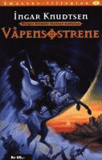

Merk: Teksten under er fra år 2000. De fleste eksterne lenker er døde. Innholdet er tatt vare på for arkivets skyld. Interne lenker er oppdatert til arkivet.
Velkommen til amasonenes verden

Amasone-serien – en kort introduksjon
Av
Ingar Knudtsen er mest kjent for sine fantasiromaner med bakgrunn i norsk hverdag i nåtid eller nær fortid, bøker som har fått enkelte til å kalle hans bøker for Norges svar på den latinamerikanske magiske realisme. Men hans serie om krigerkvinnene er klassisk historisk fantasy fylt av magi og sverdkamper og gudinner og guder.
Bøkene har oppnådd en enestående status etter at de første gang ble gitt ut innbundet i begrenset opplag lenge før fantasylitteratur ble folkelesning i Norge og lenge før ordet “amazone” ble et ord seriøse historikere, arkeologer eller for den saks skyld forfattere torde bruke.
Nå gir de nye utgavene og bøkene nye lesere anledning til å stifte bekjentskap med krigerprinsessen Ata, prestinnen M’Bela, medisinkvinnen Unje, dronning Tanitsja, sverdmesteren Shina, og alle de andre i deres kamp mot mektige fiender.
Bøkene er heller ikke bare fri fantasi, men bygger på forfatterens studier av matriarkalske kulturer og gudinnereligioner. Da Våpensøstrene kom ut første gang ble forfatteren kalt “kjønnsforræder” av sinte menn og truet med juling og det som verre var.
Les Thomas sin gjesteartikkel her på nettstedet: Link
Amasone-ressurser på nettet
Samlet av Thomas Gramstad og Hans Trygve Jensen
Artikkel av Ingar Knudtsen: Who are the Amazons?
Amasoneseriens egen epost-adresse er: amazons@math.uio.no
Amazonegruppas adresse er:
http://folk.uio.no/thomas/amazone (død lenke)
Informasjon om bøkene
Den frittstående fortsettelsen av Amasone-trilogien, Amasoner, kom høsten 2001.
Året etter kom oppfølgeren til Amasoner, Gudinnas døtre,
I to brev til leserne diskuterer forfatteren begge bøkene:
Arkivet > Brev > 2001 > Brev nr. 4401
Arkivet > Brev > 2002 > Brev nr. 4402
Her finner du baksideteksten, omslaget og kartet i Amasoner:
Arkivet > Bøker > Amasoner
Her finner du baksideteksten, omslaget og kartet i Gudinnas døtre:
Arkivet > Bøker > Gudinnas Døtre
Thomas har laget digitale plakater med omslagene til Amasoner og Gudinnas døtre:
http://folk.uio.no/thomas/lister/amasoner-bok.html (død lenke)
http://folk.uio.no/thomas/lister/gudinnas-dotre.html (død lenke)
Pressemeldingene i anledning utgivelsen av Amasoner og Gudinnas døtre:
Arkivet > Kommentarer > 2001 > Amasoneslipp
Arkivet > Kommentarer > 2002 > Gudinnasdotreslipp
Her er reklame for paperbackutgivelsen av de tre første bøkene i amasoneserien:
Arkivet > Amasonene > Amasonereklame
Bestill amasonebøkene!
Du kan bestille Gudinnas døtre og Amasoner rett fra Schibsted Forlagene:
http://www.schibstedforlagene.no//articles/artid197000.html (død lenke)
http://www.schibstedforlagene.no//articles/artid110000.html (død lenke)
Avisintervjuer om amasonene
“En norsk fantasifeminist” – Få med deg intervjuet Dagsavisen hadde med Ingar :
http://www.dagsavisen.no/kultur/litteratur/2001/11/618113.shtml (død lenke)
Tolkninger og særemner
Du kan lese mer om de tre første bøkene her:
http://folk.uio.no/thomas/lister/amazone-trilogi.html (død lenke)
Her kan du lese tolkninger og diskusjoner av de forskjellige temaene og hendelsene som skildres:
http://folk.uio.no/thomas/fri/amazone-tolkninger.html (død lenke)
Margrethe Johansen har skrevet et særemne der hun gjør rede for kvinnerollen i Våpensøstrene:
Margrethe Johansen – særemne om Våpensøstrene
Marte Andresen har skrevet et særemne med spesiell vekt på fantasy- og science fiction-skriving og Våpensøstrene:
Marte Andresen – særemne om Ingar Knudtsen
Stine Emilie Hansen har skrevet et særemne om Våpensøstrene:
Stine Emelie Hansen – særemne om Våpensøstrene
Andrea Nicolaysen Carlsson har skrevet en skolebokanmeldelse av romanen Amasoner:
Andrea Nicolaysen Carlsson – bokanmeldelse av Amasoner
Yvonne Stabell har skrevet et særemne om Ingar og Tor Åge Bringsværd:
Yvonne Stabell – særemne om fantastisk litteratur
Bengt Olav Olsen har skrevet et særemne om Amasone-serien:
http://gwydion.nettene.mine.nu/s029.htm (død lenke)
Guro Bjerkan har skrevet et særemne om Amasone-serien og startet en kampanje for å få gitt ut bøkene på engelsk:
http://shades-of-moonlight.com/amasone/index.html (død lenke)
Ingars artikler om amasoner
I følgende artikler diskuterer Ingar amasoner, amasonelitteratur og kvinners stilling på ulike steder til forskjellige tider:
- Litteratur, amasoner, gudinner og kvinnemakt
- Amasoner og opprørere
- Krim, kvinner og død
- Kampen om fortida
- Ære og skam
- Familien, religionen og imperialismen
- Xena, feminist med sverd?
- Religion og likestilling
Inspirasjon
Hva kan gudinner og amazoner bety for oss i dagens samfunn? Dette kan du lese om her:
http://folk.uio.no/thomas/fri/gudinnejakt.html (død lenke)
Sigrid Saltnes, fra skoleklassen som satte opp musikkspillet om Våpensøstrene, har laget en nydelig tegning av Ata, M’Bela and Tanitsja:
http://elfwood.lysator.liu.se/loth/t/h/thessaly/amasoner.jpg.html (død lenke)
En novelle av Thomas om sterke kvinner:
http://folk.uio.no/thomas/noveller/machokvinne.html (død lenke)
Erik Braathens bøker om beslektede tema:
http://folk.uio.no/thomas/lister/vida-demoner.html (død lenke)
Martin Sierra om amasonene som viktige følgesvenner:
Arkivet > Gjester > 2008 > Martin Sierra